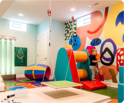
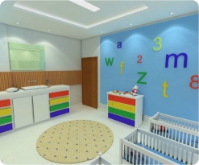
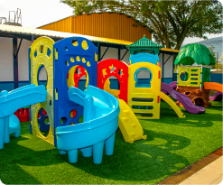

Convidamos vocês a fazer um tour pela Creche Criança Feliz para conhecer nossas instalações e equipe. Estamos sempre abertos para responder a todas as suas perguntas e discutir como podemos atender às necessidades únicas de sua família.

Com espaço montessoriano que estimula a autoeducação e o desenvolvimento holístico da criança.
Em área aberta para socialização e atividades coletivas, com brinquedos ergonômicos em material atóxico.
por idade com fraldário, banheiro infantil e hora da soneca acompanhada por contação de histórias
para a diversão com ludicidade com brinquedos acolchoados e ambiente climatizado